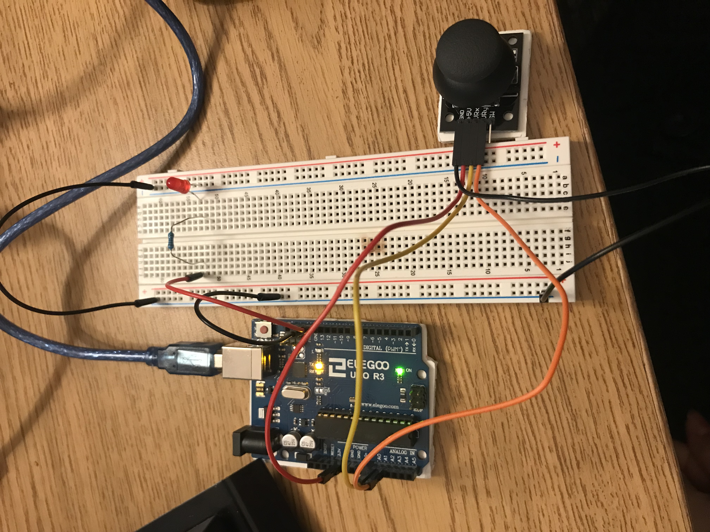
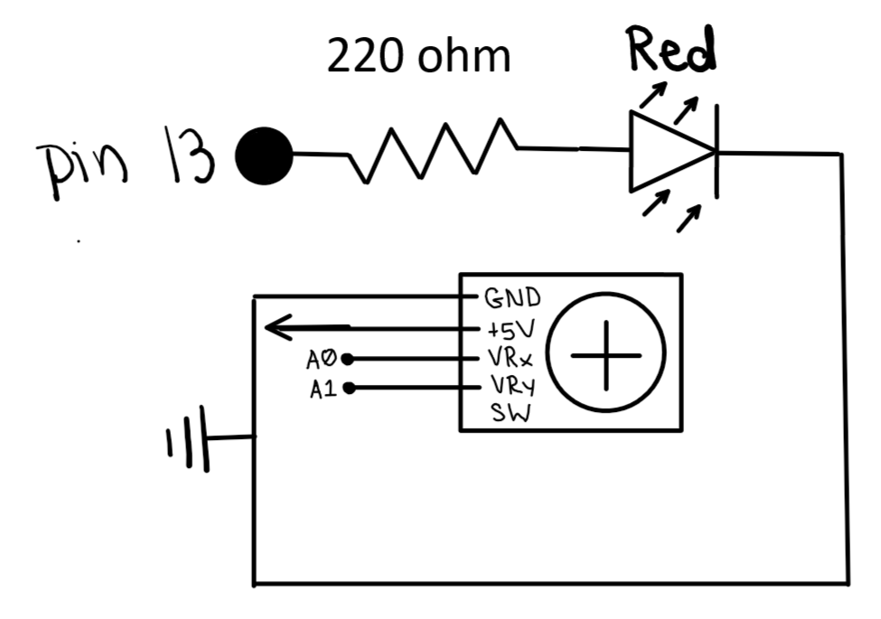
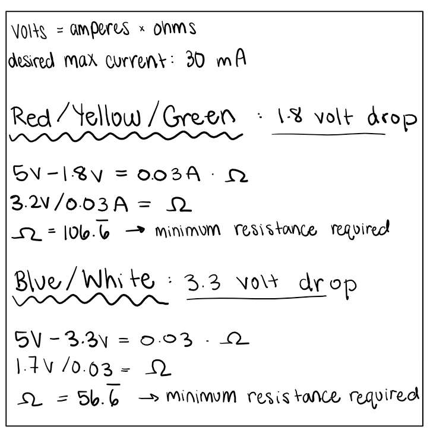

This is my arduino code
const int x = A0; // set constant x equal to A0
const int y = A1; // set constant y equal to A1
void setup() { // setup code only runs once
pinMode(x, INPUT); // initialize pin x as input
pinMode(y, INPUT); // initialize pin y as input
pinMode(13, OUTPUT); // initialize pin 13 as output
Serial.begin(9600); // initialize serial communication
}
void loop() { // put your main code here, to run repeatedly:
Serial.print(analogRead(x)/2); // print x-value to monitor
Serial.print(","); // print comma in between the two values
Serial.println(analogRead(y)/2); // print y value to monitor
if (Serial.available()) { // if there's serial input available
int inputValue = Serial.read(); // read it into a variable
analogWrite(13, inputValue); // and use the variable to turn on/off the LED
}
}
This is my index code
<!DOCTYPE html>
<style>
html, body {
height: 100%;
}
body {
margin: 0;
display: flex;
justify-content: center; /* This centers our sketch horizontally. */
align-items: center; /* This centers our sketch vertically. */
}
</style>
<html lang="">
<head>
<meta charset="utf-8">
<meta name="viewport" content="width=device-width, initial-scale=1.0">
<title>Assignment 6: Talking to the Web</title>
<style> body {padding: 0; margin: 0;} </style>
<script src="../p5.min.js"></script>
<script src="../addons/p5.sound.min.js"></script>
<script src="../addons/p5.serialport.js"></script>
<script src="a6.js"></script>
</head>
<body>
</body>
</html>
This is my sketch code
// I used this code to help my for this assingment: https://editor.p5js.org/Hanyi/sketches/THNzRgOPm
let circle_x, circle_y;
var serial; // variable to hold an instance of the serialport library
var portName = 'COM3' //rename to the name of your port
var datain; //some data coming in over serial!
var xPos = 0;
function setup() {
serial = new p5.SerialPort(); // make a new instance of the serialport library
serial.on('list', printList); // set a callback function for the serialport list event
serial.on('connected', serverConnected); // callback for connecting to the server
serial.on('open', portOpen); // callback for the port opening
serial.on('data', serialEvent); // callback for when new data arrives
serial.on('error', serialError); // callback for errors
serial.on('close', portClose); // callback for the port closing
serial.list(); // list the serial ports
serial.open(portName); // open a serial port
createCanvas(512, 512);
}
// get the list of ports:
function printList(portList) {
// portList is an array of serial port names
for (var i = 0; i < portList.length; i++) {
// Display the list the console:
print(i + " " + portList[i]);
}
}
function serverConnected() {
print('connected to server.');
}
function portOpen() {
print('the serial port opened.')
}
function serialError(err) {
print('Something went wrong with the serial port. ' + err);
}
function portClose() {
print('The serial port closed.');
}
function serialEvent() {
if (serial.available()) {
datain = serial.readLine();
console.log(datain);
let data_array = split(datain, ",");
console.log(data_array[0]);
if (data_array > 1) {
circle_x = data_array[0];
circle_y = data_array[1];
}
}
}
function draw() {
background(0);
fill(255, 0, 0);
rect(230, 0, 100, 512);
//coordinates = (console.log(datain));
//circle_x = int(coordinates[0]);
//circle_y = int(coordinates[1]);
fill(255, 255, 255);
rect(circle_x, circle_y, 30, 30);
}
function joystick() {
if (230 < circle_x < 330) {
serial.write("HIGH");
} else {
serial.write("LOW");
}
}